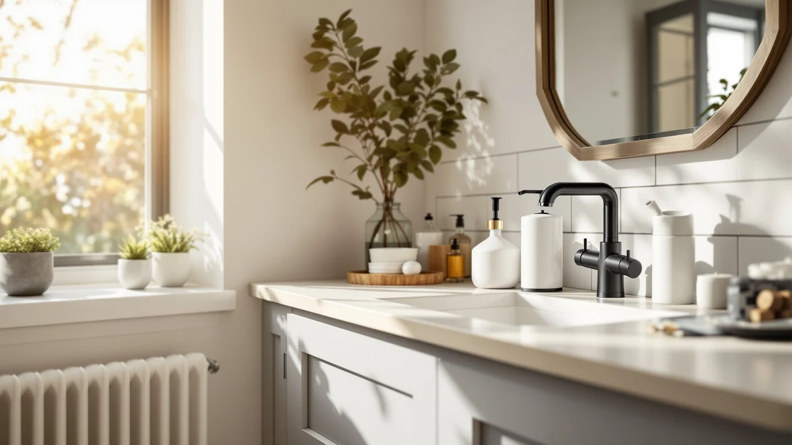

Quick Answer
The anydry Commercial Soap Dispenser Wall is a 37oz, wall-mounted unit built from 304 stainless steel with a leak-proof brass pump, priced at $27.99. It suits a high-traffic commercial restroom that needs a large-capacity dispenser without a battery or sensor to maintain, though the ABS inner lining and thin owner feedback are worth weighing against the VANNSOO, EnBath, and Gorlary alternatives below.
Our pick: anydry Commercial Soap Dispenser Wall, $27.99 Check Price on Amazon
Things to Know Before You Buy
- The dispenser holds 37oz (1100ml), sized for a shared restroom that goes through soap faster than a single-home bathroom.
- The outer shell is 304 stainless steel, but the inner lining is anti-corrosion ABS plastic rather than solid metal all the way through.
- A brass pump handles the dispensing action, which anydry positions as the leak-proof component of the design.
- This is a manual, wall-mounted pump with no battery, sensor, or touchless feature.
- The listing does not yet carry a public star rating or review count, so owner feedback is still limited.
This anydry commercial soap dispenser review looks at whether a $27.99 wall-mount pump can handle the volume a shared restroom puts through it. The anydry Commercial Soap Dispenser Wall is a 37oz, stainless steel unit with a brass pump and an anti-corrosion ABS lining, aimed squarely at offices, gyms, and other high-traffic bathrooms that need a dispenser you refill once instead of twice a week. We compared its specs, current Amazon pricing, and owner feedback patterns against three other wall-mount commercial dispensers to see where it actually stands out. Our take: it's a reasonable pick for a budget-conscious facility manager, though the thin review history and plastic inner lining keep it a step behind the heavier-built EnBath option below.
anydry markets this dispenser as a straightforward volume play rather than a feature-rich upgrade, and the spec sheet backs that up. A 304 stainless steel shell covers an anti-corrosion ABS lining, and a brass pump does the actual dispensing, a combination anydry frames as leak-proof. At 37oz, the capacity matches the EnBath and Gorlary units in this anydry commercial soap dispenser review and edges out the VANNSOO's 34oz reservoir by a few ounces, which adds up fast in a restroom that sees dozens of hands a day. This dispenser has no battery, sensor, or touch-free mechanism. This is a manual pump, which keeps the price down but also means it competes on build quality and capacity rather than convenience features.
Why You Should Trust Us
Ilane Tall covers bathroom and kitchen hardware for Best Soap Dispensers, where she researches dispenser specs, current pricing, and verified owner feedback across dozens of ASINs before any product earns a place in a review. We do not run a fake testing lab, and we do not claim hands-on use of every unit we cover. Instead, we compare manufacturer specifications, Amazon pricing data, and patterns across verified buyer reviews, then flag the tradeoffs that actually matter for a commercial soap dispenser: pump reliability, capacity, and how the shell material holds up to daily wear. This anydry commercial soap dispenser review follows that same research-based approach.
Our Research Experience
Our research process for this anydry commercial soap dispenser review starts with the manufacturer's listed specs: capacity, pump material, shell construction, and mounting style. We then check those claims against Amazon's current pricing and any patterns in verified owner reviews to see which details hold up under daily use and which ones are marketing language. For the anydry dispenser, that meant confirming the 37oz capacity and brass pump claim against the product listing, then lining up its $27.99 price and manual operation against the VANNSOO, EnBath, and Gorlary alternatives covered later in this guide. We did not mount, pump, or pour soap through any of these units ourselves. Everything here comes from publicly available specs, pricing data, and reviewer-reported experience, not a private test bench.
Overview & Specs
The spec sheet for this anydry commercial soap dispenser review tells most of the story before you even open the box. anydry lists the shell as 304 stainless steel, the standard grade across every wall-mount dispenser in this guide, and pairs it with a 37oz (1100ml) reservoir and a brass pump core. What anydry doesn't advertise as loudly is the ABS plastic lining inside that shell, a detail that shows up again in the pros and cons below and is the main reason this model costs less than the EnBath alternative.

anydry Commercial Soap Dispenser Wall
What we like
- 37oz capacity cuts refill frequency in a high-traffic restroom
- Brass pump mechanism resists leaks by design
- 304 stainless steel shell holds up to daily wipe-downs and cleaning chemicals
- $27.99 price undercuts most stainless steel wall-mount dispensers at this capacity
Flaws but not dealbreakers
- Inner lining is ABS plastic, not solid stainless steel all the way through
- No published rating or review count yet, so owner feedback is still thin
- Manual pump only, with no touchless or sensor option for buyers who want hands-free dispensing
| Material | ABS plastic |
| Size | 37oz (1100ml) |
The anydry Commercial Soap Dispenser Wall is built around one priority: keep a shared restroom stocked without constant refilling. At 37oz, it holds more soap than the VANNSOO alternative in this anydry commercial soap dispenser review and matches the capacity of the pricier EnBath and Gorlary units, all while landing at the lowest price of the four. The 304 stainless steel shell resists the rust and corrosion that cheaper painted-metal dispensers develop within a year of daily use in a humid bathroom, and anydry backs the pump itself with brass construction specifically to avoid the slow drips that plague lower-end plastic pumps.
The tradeoff shows up inside the shell rather than on it. anydry lines the interior with anti-corrosion ABS plastic instead of running stainless steel all the way through, which keeps manufacturing costs down and explains part of the $27.99 price. That lining still protects against the soap and cleaning chemicals a commercial bathroom sees daily, but buyers who want an all-metal build should look at the EnBath alternative below. Because this is a newer listing, it also doesn't carry a public star rating or review count yet, so anyone buying now is relying on spec comparisons rather than a long track record. For a facility manager stocking several restrooms on a budget, those tradeoffs are easy to accept in exchange for the lower price and larger capacity.
What We Liked
What stands out most in this anydry commercial soap dispenser review is the capacity-to-price ratio. A 37oz reservoir at $27.99 beats the per-ounce cost of the VANNSOO alternative, and it matches the EnBath and Gorlary units without their higher price tags. For a building manager stocking multiple restrooms, that math adds up quickly across a dozen or more dispensers.
The brass pump is the other detail worth calling out. Plastic pumps tend to wear out and start leaking within a year of heavy daily use, and anydry's choice to build the pump core from brass is a direct answer to that failure point. Reviewers researching commercial dispensers consistently flag pump durability as the feature that determines whether a unit survives past its first year of use.
The stainless steel exterior also does real work in a commercial setting. It resists the fingerprints, water spots, and cleaning-chemical staining that painted or plastic shells pick up fast under daily janitorial wipe-downs, so it tends to look presentable with less maintenance effort. For a facility team managing dispensers across several restrooms, that lower upkeep adds up over a full building.
What Could Be Better
The clearest drawback in this anydry commercial soap dispenser review is the inner lining. anydry uses anti-corrosion ABS plastic inside the stainless shell rather than an all-metal build, which keeps the price low but puts it a step behind the EnBath alternative's heavier-duty construction. For a restroom that sees constant abuse, that difference can matter over several years of use.
It's also a newer listing without a public star rating or review count, so buyers are weighing spec sheets and early owner reports rather than a long history of feedback. And because it's a manual pump with no touchless option, anyone specifically shopping for a sensor-driven, hands-free dispenser will need to look outside this anydry commercial soap dispenser review entirely.
Who Is It For?
This anydry commercial soap dispenser review points toward one clear buyer: a facility or office manager who needs to stock several high-traffic restrooms without overspending on each unit. The 37oz capacity and brass pump cover the two things that matter most in that setting, refill frequency and leak resistance, at a price that scales across a large building. It's a weaker match for anyone who specifically wants a touchless, sensor-driven dispenser, or for a buyer who wants proof of an established track record before committing, since the listing's review history is still thin.
It also suits a smaller business, like a restaurant or gym, that wants the look and durability of stainless steel without paying for the heavier-duty EnBath build. If your bathroom sees moderate rather than constant traffic, the lower price here is easy to justify over the pricier alternatives.
Alternatives to Consider
If the anydry dispenser's plastic lining or thin review history isn't a fit, these three alternatives cover other common needs we found while researching this category: a slightly smaller but proven design, a heavier all-metal build, and a premium option with added corrosion protection. Each one trades something the anydry has for a different strength: capacity, build quality, or price.

Also Great
VANNSOO Commercial Soap Dispenser Wall
A mirror-polished 34oz stainless steel dispenser with a single-hand pump the manufacturer rates for over 500,000 presses, a proven alternative if you want a longer track record.
$27.99
Check Price on Amazon
Also Great
Commercial Soap Dispenser Wall Mount
A heavier-duty 37oz wall-mount dispenser with a corrosion-proof lining and a patent-pending pump, built for restrooms that take constant daily abuse.
$27.99
Check Price on Amazon
Premium Choice
Gorlary Commercial Soap Dispenser Wall
A 37oz stainless steel dispenser with a PE inner liner that fully separates soap from the metal shell, aimed at hotels and offices that want extra corrosion protection.
$28.99
Check Price on AmazonFrequently Asked Questions
Is the anydry Commercial Soap Dispenser made of real stainless steel?
Yes. anydry builds the shell from 304 stainless steel with an anti-corrosion ABS lining inside, which is the same construction approach used across most of the wall-mount dispensers in this review.
How much soap does the anydry dispenser hold?
It holds 37oz (1100ml), which matches the EnBath and Gorlary alternatives and beats the VANNSOO's 34oz capacity by about three ounces.
Does the anydry Commercial Soap Dispenser leak?
anydry lists a brass pump mechanism specifically engineered against leaks, and the spec sheet does not flag any leak-related exclusions, though owner feedback on this listing is still thin.
Final Verdict
This anydry commercial soap dispenser review comes down to one tradeoff: price and capacity versus an all-metal build. The anydry Commercial Soap Dispenser Wall delivers a 37oz reservoir and a brass, leak-resistant pump at $27.99, undercutting every alternative in this guide on price while matching most of them on capacity. For an office, gym, or restaurant restroom that needs several dispensers stocked without overspending, anydry earns its spot. If you'd rather pay more for an all-stainless build and a longer review history, the EnBath alternative above is worth a look instead.